2．级数解和特殊函数
正如我们刚才已经说过的，为了求解应用变量分离法于偏微分方程后所得的常微分方程，数学家们没有过分忧虑解的存在性和解应具有的形式，而转向无穷级数的方法（第21章第6节）。从变量分离得到的常微分方程中最重要的是贝塞尔方程
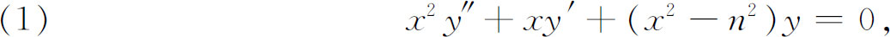
其中n是参数，可以是复的，x也可以是复的。然而，对数学家兼哥尼斯堡天文台台长贝塞尔（1784—1846）来说，n与x都是实的。这个方程的特殊情形早在1703年就发现了，詹姆斯·伯努利在给莱布尼茨的一封信里作为特解就谈到了它，此后，在丹尼尔·伯努利和欧拉的更广博的著作中又谈到过（第21章第4，6节；第22章第3节）。特殊情形还出现于傅里叶和泊松的著作中。对这个方程的解的最早的系统研究是由贝塞尔在研究行星运动时做出的(1)。对每个n，这方程有两个独立的解，今天记为
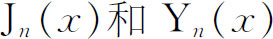
，分别叫做第一类和第二类贝塞尔函数。贝塞尔自1816年开始，对这方程进行研究，首先（对整数n）给出积分关系式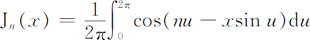
（他写这为
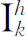
，而他的k就是我们的x）。贝塞尔还得到级数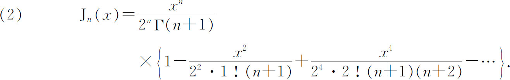
1818年贝塞尔证明了Jn （x）有无穷多个实零点。在1824年的论文中，贝塞尔还（对整数n）给出递推公式
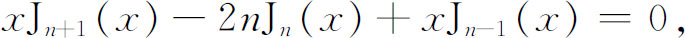
和别的许多牵涉到第一类贝塞尔函数的关系式。把贝塞尔函数
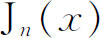
中的n和x取值为复数，并使（2）保持为正确公式的推广是由几个人(2)做出来的。因为二阶方程应当有两个独立的解，所以很多数学家都去寻找它们。当u不是整数时，这第二个解是J-n（x）。对于整数n，第二个解是由卡尔·诺伊曼(3)找出来的。然而，今天最普遍采用的公式是汉克尔（Hermann Hankel，1839—1873）(4)找到的，即
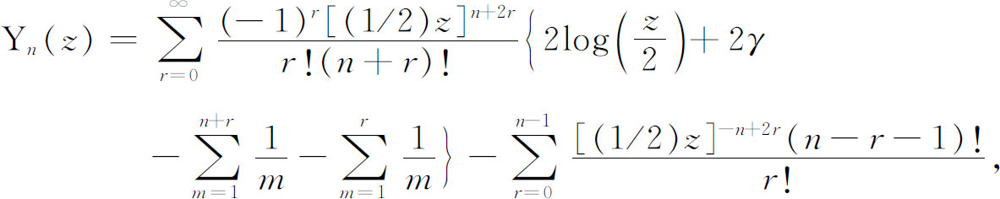
其中γ是欧拉常数。卡尔·诺伊曼(5)还给出解析函数f（z）的展开式，即
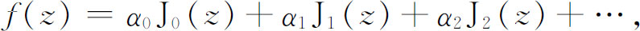
1其中αi是可以确定的常数。
许多数学家，通常是研究天体力学的数学家，独立地得到了贝塞尔函数和成百个别的关系式以及这些函数的表达式。论述这些函数的庞杂文献中的一些思想可以从沃森（George N．Watson）的《贝塞尔函数论教程》(6)（A Treatise on the Theory of Bessel Functions）中得到。
勒让德多项式或单变量球函数和两个自变数的球面函数早已由勒让德和拉普拉斯引进了（第22章第4节）。勒让德多项式满足勒让德微分方程
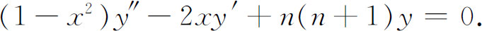
如我们所知，这个方程是对以球坐标表示的位势方程应用分离变量法而得到的。1833年，剑桥大学的一位校务委员墨菲（Robert Murphy，死于1843年）写了一本教科书《电、热和分子作用理论的基本原理》（Elementary Principles of the Theories of Electricity，Heat and Molecular Actions）。在书中，他收集了有关勒让德多项式的一些老的结果，并得到了一些新的结果。因为大部分结果早已为人所知，所以我们不介绍墨菲著作的细节，只是指出，它是系统性的著作，并且他证明了“任何”函数f（x），通过逐项积分和正交性质（积分定理），可以按Pn（x）展开。
海涅(7)在论述旋转椭球体外部的位势问题和同心旋转椭球面之间的壳体的位势问题时（第28章第5节）引进了第二类球面调和函数，通常记为Qn（x），这函数为勒让德方程提供了第二个独立解。像贝塞尔函数一样，勒让德函数已扩充到复的n和复的x，还得到了若干别的表达式以及它们之间的关系式(8)。
特殊函数作为常微分方程的级数解而出现，它的研究由高斯在1812年关于超几何级数的一篇著名论文(9)加以推进。在这篇论文中，高斯没有用到微分方程
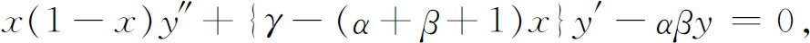
但他在未发表的材料中确实用到了这方程(10)。当然，这方程及其级数解
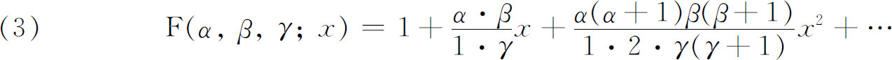
早已为人们熟知了，因为它们已由欧拉研究过（第21章第6节）。高斯认识到对于α，β，γ的特殊值，这级数包括了几乎所有当时已知的初等函数和许多像贝塞尔函数、球函数那样的高级超越函数。除了证明这些级数的一些性质外，高斯还建立了著名的关系式：
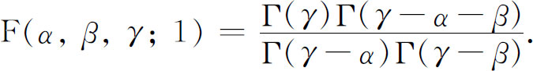
他还建立了这级数的收敛性（参考第40章第5节）。记号
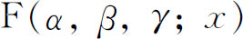
应归源于高斯。另一类特殊函数是由拉梅引进的(11)。在第28章第5节中，我们曾经指出拉梅在研究椭球内稳态的热分布时，用椭球坐标ρ，μ，ν分离了拉普拉斯方程。这个程序对这三个变量中的每一个都给出同一个常微方程，即
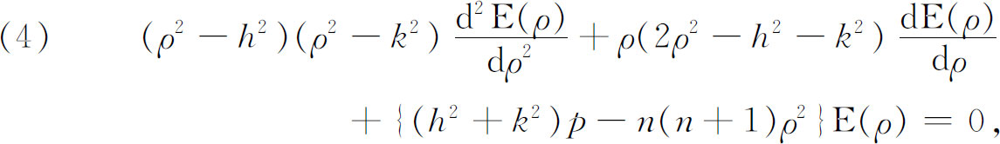
对μ和ν要用适当的变换代到ρ的位置上去。这里h2和k2是坐标曲面族方程中的参数，而p和n则是常数。这方程叫做拉梅微分方程，它的解E（ρ）叫做拉梅函数或椭球调和函数。对于整数n，这些函数归属于下列四类形式：
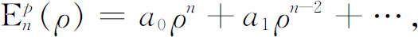
或者是这种多项式乘上
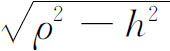
，或者乘上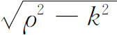
，或者乘上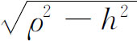
和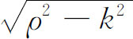
两个因子。对于n的给定值，这种函数［保证E（ρ）的某些性质］的个数是2n＋1。拉梅方程的第二个解［从E（ρ）的其他条件或性质得到］是
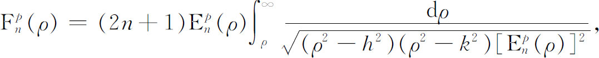
这种函数叫做第二类拉梅函数。这些都是由刘维尔(12)和海涅(13)引进的。
微分方程
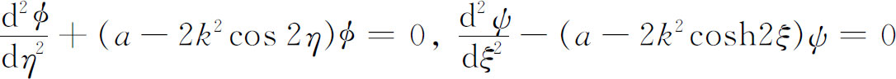
出现在马蒂厄关于椭圆薄膜振动的工作中(14)，他们还出现于椭圆柱的位势问题中，那是把方程Δu＋k2u＝0用二维椭圆柱坐标表示，然后应用变量分离法而引起的。碰巧这些椭圆坐标由方程
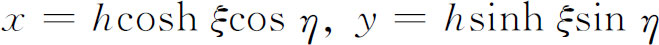
与直角坐标相联系，其中x＝±h，y＝0是在椭圆坐标系里同焦椭圆族和双曲线族中诸椭圆和双曲线的焦点。表达马蒂厄方程的各种形式以及不同作者对解所取的许多记号是纷繁的，用两个微分方程中的任一个定义的函数叫做椭圆柱的海涅函数，现在叫做马蒂厄函数。马蒂厄和海涅首先得到解的级数表达式。后来他们企图固定参数a，使得一类解成为以2π为周期的周期解。寻求周期解的问题对物理应用是最重要的问题，在这整个世纪中都在努力研究这个问题。1883年(15)弗洛凯（Gaston Floquet）发表了关于n阶线性微分方程（它的系数有同一周期ω）的周期解的存在性及其性质的一篇完整的讨论。解的普遍性质已经确定之后，后来的作者集中很大注意力于发现找出解的实际方法的问题，但没有发现普遍的方法（参看第7节）。
广泛地研究过的一类特殊函数是海因里希·韦伯（1842—1913）在1868年引进的(16)。海因里希·韦伯对两抛物线围成的区域内积分Δu＋k2u＝0感兴趣，所以他把直角坐标通过变换
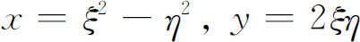
变到抛物线坐标（它是椭圆坐标的极限情形）。ξ＝常数和η＝常数这两族曲线是抛物线族，一族中每一条与另一族中各曲线正交。海因里希·韦伯用变量分离法从简化后的波动方程导出的常微分方程是
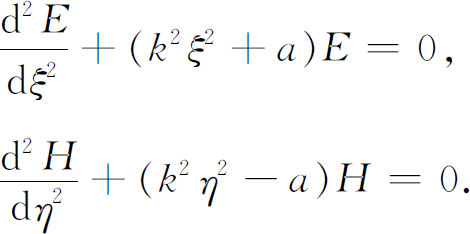
海因里希·韦伯用定积分的形式给出了第二个方程的四个特解，这些解叫做抛物柱函数。海因里希·韦伯还指出，在所有正交坐标系中，可对Δu＋k2u＝0应用变量分离法的唯一情形是二阶同焦曲面或由之而得的特殊分支。
特殊函数类要比我们这里所能摘述的远为繁多。上述类型和引入的许多其他类型足供在某有界区域内解微分方程之用，也可用于在这区域内表示任意函数（通常是偏微分方程问题的初始函数）之用。有界区域的限制是由于正交性质而施加的。在三角函数的基本情形中，这区域是（-π，π），因为，比如说
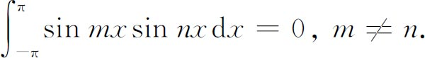
在无穷区间或半无穷区间上解常微分方程的问题以及在这些区间上求得任意函数的展开式问题，在这世纪的后半期也为许多人研究过，像埃尔米特函数这样的特殊函数首先由埃尔米特在1864年(17)，索尼内（Nikolai J．Sonine，1849—1915）在1880年(18)引入，把它作为解这个问题之用。
为了使用这些特殊函数的所有类型，必须知道它们的性质，就像对初等函数的性质一样熟悉。还因为这些特殊函数更为复杂，所以其性质也同样复杂。原始论文和教科书中的文献几乎是难以置信地庞杂。对于贝塞尔函数、球函数、椭球函数、马蒂厄函数以及其他类型的函数已经有了完整的专门论著。